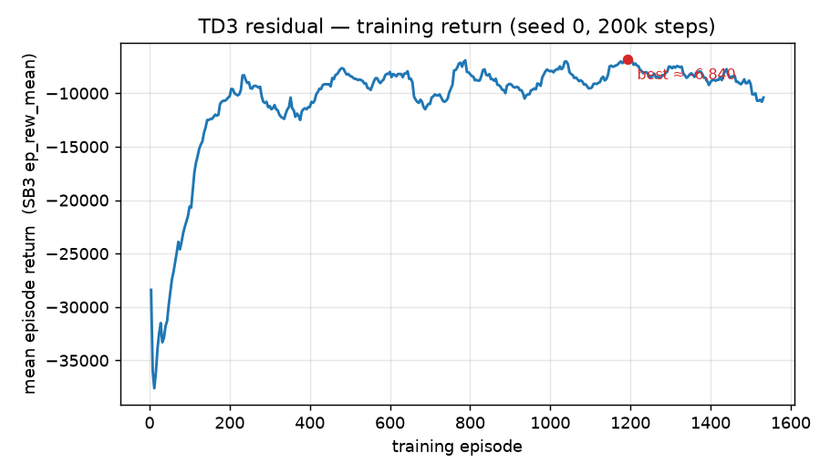
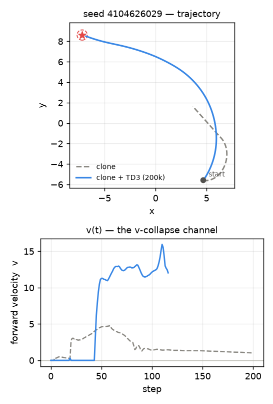
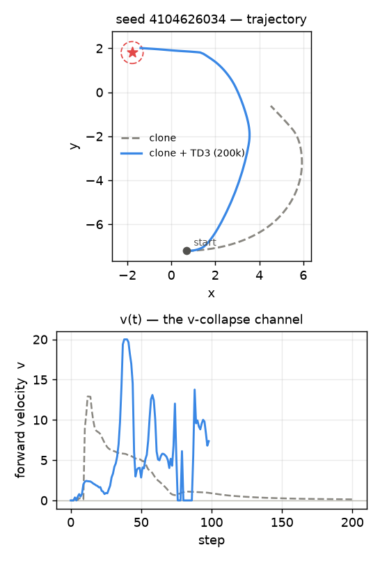
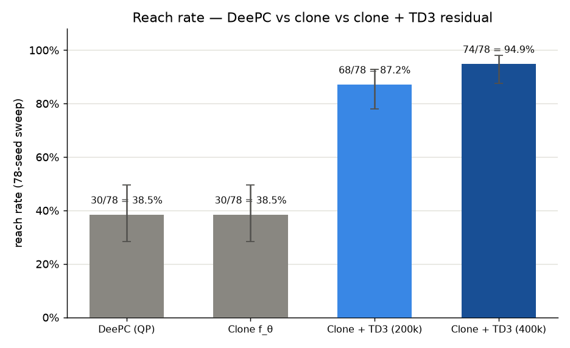
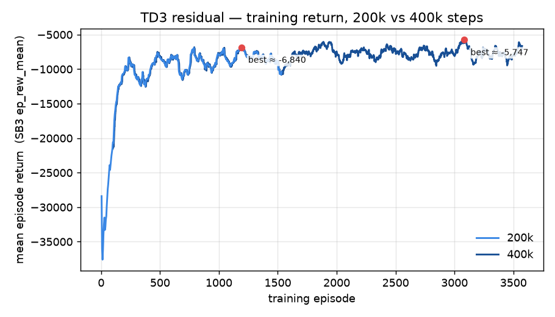

09. Residual RL — RL + MPC over the frozen clone¶
Status: complete (2026-07-08; extended 2026-07-20)
A TD3 residual trained on top of the frozen DeePC clone turns the far-field
v-collapse from a failure into a solve. On the canonical 78-seed sweep the hybrid
u = clip(f_θ + μ) reaches 68/78 = 87.2 % vs the clone's (and DeePC's) 30/78 =
38.5 % — it rescues 38 of the 48 seeds the clone stalls on with 0 regressions
(it never breaks a seed the clone already solved), McNemar \(p < 10^{-4}\). The residual is
zero-initialized, so at step 0 it is the clone; RL only adds the forward velocity the
hallucinated predictor refused to. The QP never re-enters the loop: control is a 103 µs
two-MLP forward pass. This is the paper's RL + MPC architecture
(arXiv:2510.03354, Eq. 18) on the unicycle task.
2026-07-20 update: doubling the training budget to 400k steps (same
hyperparameters, fresh zero-init run) lifts this to 74/78 = 94.9 %, rescuing 6 of
the 10 remaining failures with still 0 regressions — see the "Follow-up — training
to 400k steps" section below.
Motivation (one line)¶
The clone faithfully reproduces DeePC — including its ~39 % ceiling and the far-field stall (07). Add a learned residual that fixes the stall while keeping everything DeePC already gets right.
Context¶
06 diagnosed the ceiling: DeePC navigates well on ~39 % of seeds and
collapses on the rest — a hallucinated-prediction v-collapse where the QP commits
v ≈ 0 and the robot stalls in the far field. 07 amortized DeePC
into a 23 µs neural clone f_θ that reproduces both its successes and its failures —
by design, so that a learned residual has a fast, faithful baseline to correct. This entry
is that residual.
The plan named the obstacle it removes:
"Residual RL keeps the QP in the training loop — a ~0.5 s solve every step … likely prohibitive as-is."
Because the baseline is now f_θ (a forward pass), the QP never enters the RL loop.
What was built¶
The composition. A standalone gym.Env (ResidualDeePCEnv) holds the frozen clone, an
inner TwoWheelGoal-v0, and the DeePC-style T_ini buffer. Each step it forms the paper's
RL + MPC control (Eq. 18):
and slides the buffer with (applied u, pre-step y) — the exact convention the clone was
labeled under, so the two stay comparable. The residual authority ρ = residual_frac defaults
to 1.0 (full range): the far-field fix needs a large v correction to escape the stall,
and the final clip keeps u in bounds regardless.
Zero-init = no-regression at init. The TD3 actor's output head is zero-initialized, so at step 0 the residual is exactly 0 and the policy is bit-for-bit identical to the clone (a unit-test pins this: a zero-residual rollout reproduces the clone's closed loop exactly). RL can then only add to a known-good baseline — the floor is "no worse than clone."
Observation / action. The actor sees a 7-D obs — the env's body-frame state (5) plus the
baseline's proposed u_base (2), min-max normalized to \([-1,1]\) — and emits a residual in
\([-1,1]^2\). Feeding it u_base lets it learn how much to correct the baseline rather than
rediscovering the baseline.
Why TD3 — not PPO or classic DDPG. The earlier roadmap defaulted to PPO; the paper
uses classic DDPG; we use TD3. PPO is on-policy, so it discards the rare stall-escape
transitions this problem hinges on — an off-policy replay buffer reuses them — and its
stochastic policy has no clean "start exactly at the clone and stay there until it helps"
init. Classic DDPG is the right family (off-policy, deterministic actor — which is what makes
zero-init crisp) but is notoriously unstable; TD3 is a strict, drop-in upgrade (twin
critics + clipped double-Q against overestimation, target-policy smoothing, delayed actor
updates). SAC is kept as a built-in fallback (--algo sac) for the hard-exploration regime,
not the default.
Training. TD3 on the env's native reward (already DeePC's quadratic cost + reach
bonus), 200k steps, single env, net_arch=[256,256], action-noise σ = 0.1, CPU. Mean episode
reward improved ~4× (−3.4·10⁴ → a noisy plateau around −8·10³; best −6.8·10³) as the residual
learned to drive through the stall (curve below). The QP is never called during training.

Mean episode return (SB3 ep_rew_mean) over training episodes — the shipped seed-0 run: a
rapid climb (episodes ~20–200), then a noisy plateau (~−7k to −11k). The return plateaus and
even dips late while the reach rate is 87.2 % — the reward also charges control effort
−uᵀRu, so a lower return does not mean fewer reaches (TD3 also saves the final, not the best,
policy). Regenerate from the committed curve with uv run python scripts/plot_training_return.py.
Side-by-side — clone vs clone+residual¶
Two rescued seeds under the canonical config (same start/goal for both controllers). Left
= the clone (stalls in the far field); middle = clone + residual (reaches); right = the same
two closed loops as a static trajectory + v(t) trace, so the video's qualitative "it
drives through the stall" is paired with the quantitative channel that changed. These are the
v-collapse seeds from 06 — the exact regime the residual was built for.
| Clone — the DeePC surrogate (stalls) | Clone + TD3 residual (reaches) | Trajectory + v(t) |
|---|---|---|
| seed 4104626029 — clone truncates at 12.91 (deep far-field stall); residual REACHES in 116 steps → 0.39 | ||
 |
||
| seed 4104626034 — clone truncates at 6.75; residual REACHES in 98 steps → 0.43 | ||
 |
||
Trajectory panel: clone (dashed gray, stalls) vs clone + TD3 residual (blue, reaches), goal
marked with a star and the 0.5-unit tolerance circle. v(t) panel: the same two closed loops'
forward-velocity channel — the clone's v decays toward 0 (the collapse), the residual's v
climbs instead of decaying and drives the reach. Regenerate with
uv run python scripts/plot_seed_traces.py --seed 4104626029 (reads the committed
traj_<seed>_{clone,residual}.csv, written once by scripts/eval_seed_showcase.py).
Metrics¶
Three-way reach rate — 78 seeds, base seed 4104626029, canonical config¶
| controller | reach rate | 95 % CI (Wilson) | per-step control |
|---|---|---|---|
| DeePC (QP) | 30 / 78 = 38.5 % | [0.284, 0.496] | ~0.6 s (QP) |
clone f_θ (surrogate) |
30 / 78 = 38.5 % | [0.284, 0.496] | 23 µs (MLP) |
| clone + TD3 residual | 68 / 78 = 87.2 % | [0.780, 0.929] | 103 µs (2 MLPs) |
| clone + TD3 residual (400k) | 74 / 78 = 94.9 % | [0.875, 0.980] | 103 µs (2 MLPs) |
DeePC and the clone match at 30/78 — the clone reproduces the QP baseline exactly, confirming the harness is identical to 07.

Reach rate over the canonical 78-seed sweep, error bars = 95 % Wilson CI. DeePC and the
clone are statistically indistinguishable (by construction); the residual is a clear jump
outside either baseline's CI, and doubling the training budget lifts it further still.
Regenerate with uv run python scripts/plot_reach_rates.py (reads the committed
docs/journey/figures/reach_rates.csv — no benchmark re-run needed).
Paired — residual vs clone (the decisive test)¶
| paired metric | value |
|---|---|
| confusion (both / clone-only / residual-only / neither) | 30 / 0 / 38 / 10 |
| rescued (clone fails → residual reaches) | 38 |
| regressions (clone reaches → residual fails) | 0 |
| McNemar \(p\) | \(< 10^{-4}\) (highly significant, one-sided improvement) |
| trajectory position deviation vs clone | median 2.45 · median-of-p95 5.90 (units) |
Reading the numbers¶
- It fixes the failure regime, not a random slice. The 38 rescued seeds are exactly the
far-field
v-collapse cases from 06. Reach rate goes 38.5 % → 87.2 % by solving the hard 62 %, not by trading one set of seeds for another. - Zero regressions — the no-regression property held through training. Every seed the clone solved, the residual still solves (clone-only = 0). Zero-init guaranteed this at step 0; 200k steps of TD3 never gave it back. This is the payoff of adding a residual on top of a good baseline rather than fine-tuning away from it.
- Larger trajectory deviation is the point here. Unlike the clone (which was built to track DeePC, ~0.9-unit deviation in 07), the residual is built to diverge where DeePC stalls — hence median 2.45 units. The deviation concentrates on the rescued seeds, where the clone sits still and the residual drives to the goal.
- The 10 that remain. 10/78 are solved by none of the three — the residual is a large improvement, not a universal solver. These are the next frontier.
- The speedup survives. Control is a 103 µs two-MLP forward pass (clone
f_θ+ actor μ) vs the QP's ~0.6 s — ~5,800× — and the QP never entered the training loop.
What this shows¶
The paper's RL + MPC hybrid transfers to the unicycle: an amortized MPC surrogate supplies the prior where its data representation is valid, and a conservatively-initialized RL residual backstops the regime where it is not — recovering more than half the task's failures at no cost to its successes and no QP in the loop.
Follow-up — training to 400k steps (2026-07-20)¶
The first open question above ("reachable with more training?") is cheap to test directly:
same architecture, same hyperparameters (net_arch=[256,256], action-noise σ = 0.1, seed 0),
just --timesteps 400000 instead of 200000 — a fresh zero-init run, not a continuation of
the shipped checkpoint. ep_rew_mean plateaus at a similar level to the 200k run (~−6.8·10³
to −6.9·10³), so the aggregate training curve doesn't obviously look "still climbing" — the
gain comes from continued fine convergence on the hard seeds, not an unfinished run.

Mean episode return (SB3 ep_rew_mean) for both runs on the same axes. The two curves are
close to indistinguishable up to ~episode 1,300 (same seed, same hyperparameters — only the
horizon differs), then visibly diverge before the 200k run ends at ~episode 1,550: the 400k
run is not simply "the 200k run, continued," it's a fresh zero-init run whose noisy plateau
happens to sit at a similar level, consistent with the reach-rate gain coming from convergence
on individual hard seeds rather than a still-rising aggregate curve. Regenerate with
uv run python scripts/plot_training_return.py --compare 200k:docs/journey/figures/residual_return.csv
400k:docs/journey/figures/residual_return_400k.csv (both curve CSVs are committed data).
Reach rate for both checkpoints is already in the Three-way reach rate table
above (68/78 → 74/78). Of the 10 seeds that failed at 200k, 6 are fixed by the longer run
(4104626037, 59, 64, 81, 90, 92) — lifting rescued from 38 to 44 — and 4 still fail
(4104626056, 69, 83, 86) — confirmed with 0 newly-introduced regressions: every seed the
200k model solved, the 400k model still solves.
The 4 that remain, re-examined:
- Seed
4104626056— wide fly-by, unchanged. Sweeps in on one big curved arc (turns a single direction the whole episode) that passes the goal at ~1.9 units and swings back out without ever tightening into a spiral. Essentially the same shape as at 200k. - Seed
4104626069— crawl-and-drift. Approaches to 1.70 units by step 100, then drifts back out to 2.49 by the end while still turning near max rate — no longer a clean stall (vdoesn't fully collapse to 0 the way it did at 200k) but still doesn't converge. - Seed
4104626083— hairline near-miss, most encouraging. This was a complete freeze at 200k (v≈0,w≈0for nearly the whole episode). At 400k it drives hard the entire way and is still accelerating (v = 5.19) when the 200-step cap hits atdist = 0.52— 0.02 units outside the 0.5 tolerance. This looks like it would reach with only a handful more steps; the freeze is gone. - Seed
4104626086— traded one failure mode for another. At 200k this was a near-miss stop-and-spin (closest approach 0.64). At 400k the closest approach is actually worse (1.37) — it now overshoots in a fast pass, loops back for a correction, and runs out of steps mid-correction. Still a failure either way (so it doesn't count against the 0-regressions claim, which is measured on reach/no-reach), but it's a reminder that TD3 training isn't monotonically improving every seed's trajectory quality even as the aggregate reach rate goes up.
Reading it: more training is a real, cheap lever (+7.7 points, 0 regressions) and it
disproportionately helps the near-miss/late-overshoot population identified from the 200k
failure videos — but two of the four remaining failures (56 wide-orbit, 69 crawl-and-drift)
look geometry/control-authority limited rather than undertrained, consistent with the
velocity-decay-near-goal and reward-shaping ideas floated as next steps. Seed 83 is the
exception — it looks like pure undertraining and may well flip with even more steps.
Reproduce¶
# train the TD3 residual over the frozen clone (native env reward; QP never in the loop)
uv run python scripts/train_residual.py --timesteps 200000 --out data/residual_td3.zip
# three-way benchmark: DeePC (QP) vs clone-only vs clone+residual on the 78-seed sweep
uv run python scripts/eval_residual.py --model data/residual_td3.zip \
--n_seeds 78 --base_seed 4104626029
# side-by-side videos on a rescued seed (clone stalls, residual reaches)
uv run python scripts/run_clone.py --record docs/journey/videos --seeds 4104626029 # -> episode_<seed>.mp4
uv run python scripts/run_residual.py --record docs/journey/videos --seeds 4104626029 # -> episode_<seed>.mp4
# regenerate the training-return figure from the committed curve CSV
uv run python scripts/plot_training_return.py
# ...or from a fresh run's raw returns:
# uv run python scripts/train_residual.py --monitor-out data/residual_monitor ...
# uv run python scripts/plot_training_return.py --monitor data/residual_monitor.monitor.csv
# regenerate the reach-rate bar chart from the committed benchmark-results CSV
# (no 78-seed re-run needed -- it's QP-bound and takes minutes per seed)
uv run python scripts/plot_reach_rates.py
# --- 2026-07-20 follow-up: 400k-step run ---
uv run python scripts/train_residual.py --timesteps 400000 --out data/residual_td3_400k.zip \
--monitor-out data/residual_400k_monitor
uv run python scripts/eval_residual.py --model data/residual_td3_400k.zip \
--n_seeds 78 --base_seed 4104626029
# failure videos for the 4 seeds still unsolved at 400k
uv run python scripts/run_residual.py --model data/residual_td3_400k.zip \
--record docs/journey/videos \
--seeds 4104626056,4104626069,4104626083,4104626086 # -> episode_<seed>.mp4
# regenerate the 200k-vs-400k training-return overlay from the committed curve CSVs
# (the 400k curve CSV was derived once via:
# uv run python scripts/plot_training_return.py --monitor data/residual_400k_monitor.monitor.csv \
# --out docs/journey/figures/residual_return_400k.png \
# --save-curve docs/journey/figures/residual_return_400k.csv )
uv run python scripts/plot_training_return.py --compare \
200k:docs/journey/figures/residual_return.csv \
400k:docs/journey/figures/residual_return_400k.csv \
--out docs/journey/figures/residual_return_comparison.png
# --- per-seed showcase data (video-matched trajectory + v(t) traces) ---
# generates traj_<seed>_{clone,residual}.csv; DeePC is skipped entirely
# (clone/residual only), so this runs in seconds, not the QP-bound
# minutes-per-seed of eval_residual.py's three-way benchmark
uv run python scripts/eval_seed_showcase.py
# trajectory + v(t) companion figure for a video-showcased seed (200k, to match
# the embedded video's checkpoint)
uv run python scripts/plot_seed_traces.py --seed 4104626029
uv run python scripts/plot_seed_traces.py --seed 4104626034